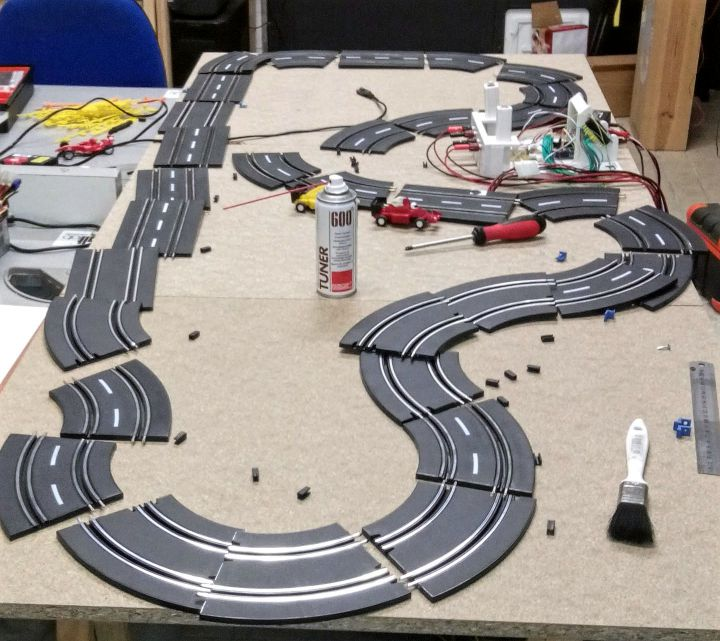
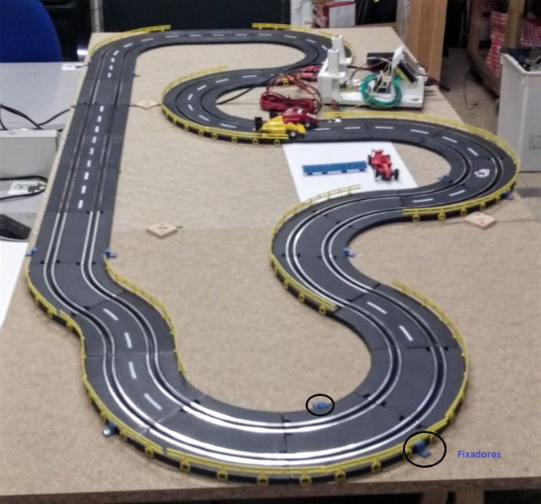
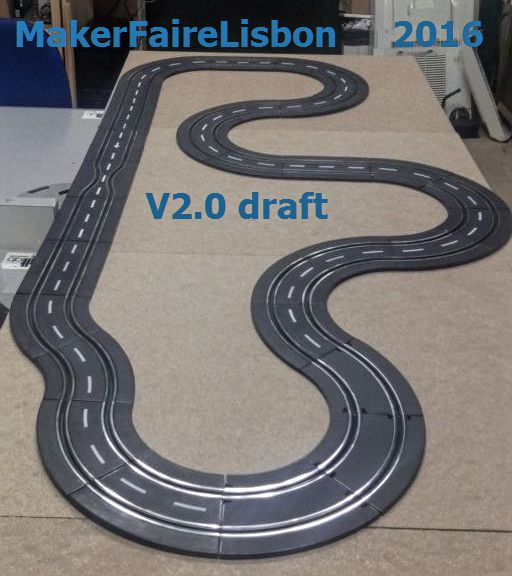
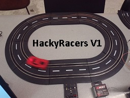
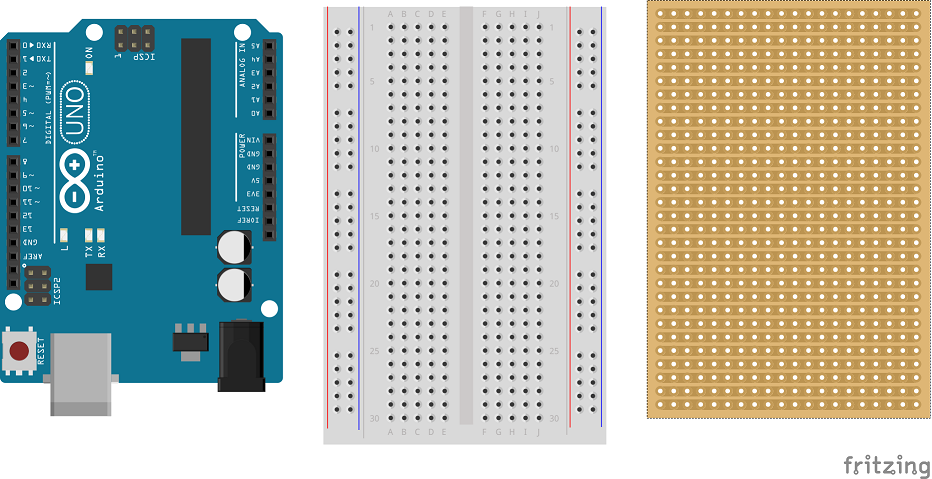
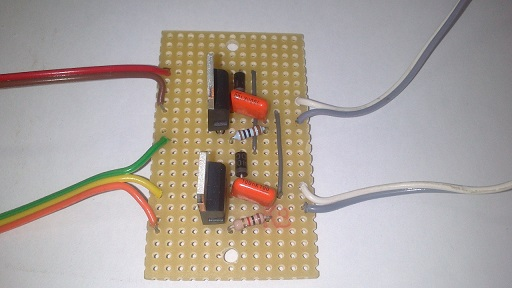
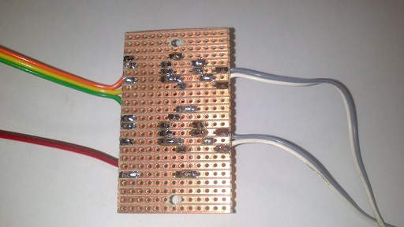

Novidades
Aqui ficará o acesso a outras páginas e projectos
my Links |
HackyRacers 2017
20170413
O hackyracers vai ter uma API e um dashboard
Como tudo na vida é WIP
HackyRacers MakerFaire 2016
20160625
O que aprendemos na feira
Precisamos de ter um suporte para apoio aos corredores. Precisamos de fazer pedaços de pista (desafio), as actuais já estao quase sem conductividade
20160623
Empacotamento
20160621
Testes finais
20160618
A pista foi toda desmontada
Rails retirados
Contactos limpos

Depois foi toda montada com ligações entre as juntas
colocados os rails de protecção e ...
os novos fixadores
Tiveram que ser desenhados novos fixadores pois com a colocação dos rails a altura da pista alterou-se.

20160609
Começamos a construção da pista da makerfaire 2016
Modelo "quase" final para a feira

Dinix Page W.I.P.
20 150 509
LINK DO DIA - :-(
09 de Maio de 2015 Como começar com experiencia
Nova Secção
Mais química
O objectivo é criar inspiraçao para evoluir as experiências antigas em novas versões
TLC 18 de Junho de 2017
The HackyRacers
Todo este trabalho foi feito por pelo Fernando Carvalho e por mim, no âmbito das actividades do Lab
|  | O Hackyacers é um projecto iniciado para o Codebits 2014. Pretende ser uma plataforma pedagógica em duas vertentes na sua construção e na sua utilização |
1ª Documentação Junho 2014, possivelmente antes :-), mas não existem evidencias
Lista de Material
- Transformador - Neste momento 6V 1.2A
- Slots de Pista de carros
- Arduino
- TIP120
- Condesandores
- Breadboard
- Stripboard
Construção

Controlo do motor
Frente

Verso

Zona de experiencias pagina
Daqui para baixo podem acontecer coisas estranhas
| 1 | 2 | 3 | 4 | 5 | 6 | 7 |
|---|---|---|---|---|---|---|
| a | b | c | d |